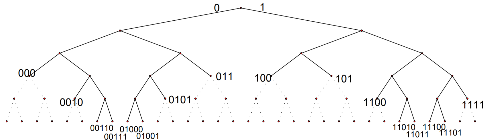
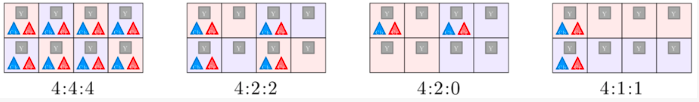
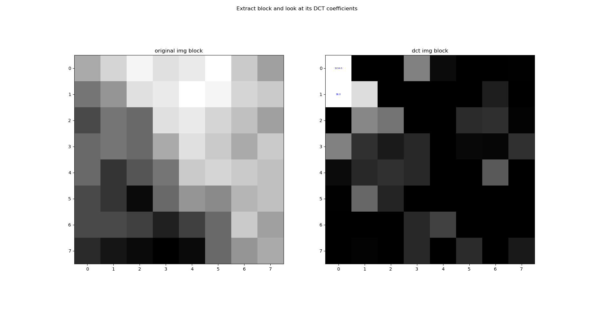
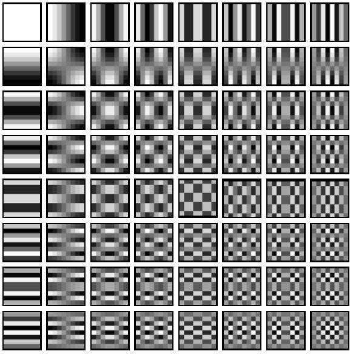
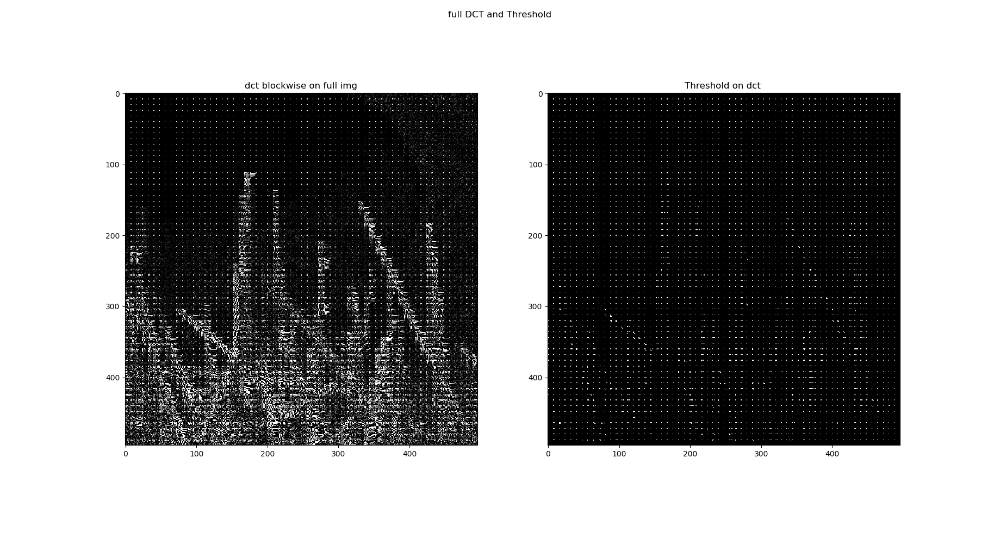
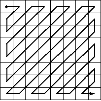

Compression¶
La compression de données est l’opération consistant à transformer une donnée A en une autre B pouvant restituer les mêmes informations, ou des informations “proches”, en utilisant un algorithme de décompression.
C’est une opération dite de codage qui change la représentation des données visant à en diminuer la taille (de stockage) de celles-ci au prix d’un travail de compression (et de décompression pour la restitution des données).
Types de compression¶
Il existe deux types de compression de données:
La compression sans perte restituant après décompression un signal (données) strictement identique à l’original avant compression. On peut exploiter par exemple la redondance des données ou des a priori sur la source de données. (Codage RLE, codage de Huffman, codage LZW …)
A l’inverse, la compression avec perte restituant un signal différent, mais relativement “proche” du signal d’origine, mais permet une compression plus importante. On considère généralement la différence entre les deux signaux comme négligeable (non perceptible) et étant une perte acceptable dans certains cas pour que la source de données reste compréhensible/perceptible. On peut par exemple exploiter la perception humaine pour définir l’information négligeable (comme les hautes fréquences d’une image par exemple).
(sous échantillonnage, Codage par DTC, codage par ondelettes …)
Taux de compression¶
Le taux de compression que l’on peut noter \(\tau\) est relié au rapport entre la taille \(b\) du fichier compressé \(B\) et la taille \(a\) du fichier original \(A\). Le taux de compression est généralement exprimé en pourcentage et est défini par :
Exemple : \(a\) = 550 Mo, \(b\)=250 Mo , \(\tau = 1 - (250/550) = 54\%\)
L’algorithme utilisé cherche généralement à obtenir un taux de compression inférieur à 1.
Entropie de Shannon¶
L’entropie de Shannon, crée par Claude Shannon, est une fonction mathématique qui permet de quantifier la quantité d’information contenue par une source d’information. Cette source peut être un texte écrit dans une langue donnée, un signal électrique ou encore un fichier informatique quelconque.
Autrement dit, l’entropie de Shannon indique la quantité d’information nécessaire pour que l’on puisse déterminer sans ambiguïté ce que l’on perçoit d’une source de données. En particulier, plus la source est redondante, moins elle contient d’information. Par exemple, si une source envoie toujours le même symbole, par exemple la lettre ‘a’, alors son entropie est nulle, c’est-à-dire minimale, car l’on peut identifier sans aucune connaissance et sans ambiguïté le prochain symbole émis par la source. En l’absence de contraintes particulières, l’entropie est maximale pour une source dont tous les symboles sont équiprobables.
Définition¶
Pour une source, qui est une variable aléatoire discrète \(X\) comportant \(N\) symboles distincts, chaque symbole \(x_i\) ayant une probabilité \(P_i\) d’apparaître. Les symboles représentent les réalisations possibles de la variable aléatoire \(X\). L’entropie \(H\) de la source \(X\) est définie comme :
Où \(\mathbb{E}\) désigne l’espérance mathématique et \(log_b\) le logarithme en base b. On utilise en général un logarithme à base 2, car l’entropie s’exprime alors en nombre de bits par symbole. Dans ce cas, on peut interpréter \(H(X)\) comme le nombre de questions à réponse binaire que l’on doit poser en moyenne à la source, ou la quantité d’information en bits que la source doit fournir au récepteur pour que ce dernier puisse déterminer sans ambiguïté la valeur de \(X\).
Interprétation¶
Dans le cas où l’on dispose d’un nombre \(N\) de symboles de la forme \(N= 2^n\) avec \(n\) entier et où les \(N\) symboles sont équiprobables, il suffit de \(n\) questions, en procédant par dichotomie, pour déterminer le symbole envoyé par la source. Dans ce cas, la quantité d’information contenue par le symbole est exactement \(n = log_2(N)\).
De manière plus générale, il est naturel de conserver cette formule dans le cas où \(N\) n’est pas une puissance de 2. Par exemple, si les symboles sont les lettres de l’alphabet et que l’on les considère toutes équiprobables, alors l’information contenue par un symbole est \(log_2(26) \approx 4.7\) . Cette valeur est une valeur intermédiaire entre 4 bits (permettant de coder 16 symboles) et 5 bits (qui permet d’en coder 32).
Exemple¶
Considérons une urne contenant des boules de 4 couleurs différentes: rouge, bleue, jaune et vert, toutes équiprobables. On tire une boule au hasard et il s’agit d’en identifier la couleur. Comme aucun tirage n’est privilégié, l’entropie est ici maximale égale à \(log_2(4)=2\). Si on convient que les couleurs sont codées respectivement \(00\), \(01\), \(10\), \(11\), l’information contenue dans le tirage correspond effectivement à 2 bits.
Mais si une certaine couleur est plus représentée que les autres, alors l’entropie est légèrement réduite. Supposons par exemple que l’urne contienne 4 boules rouges, 2 bleues, 1 jaune et 1 verte.
On peut calculer l’entropie de la manière suivante:
Si les couleurs sont codées respectivement \(0\) pour le rouge, \(10\) pour le bleu, \(110\) pour le jaune et \(111\) pour le vert, alors l’information sur la couleur tirée occupe 1 bit une fois sur deux, 2 bits une fois sur quatre et 3 bits une fois sur quatre, soit en moyenne 7/4 bits, correspondant à l’entropie calculée.
Codage de Huffman¶
Le codage de Huffman est un algorithme de compression de données sans perte. Il consiste à utiliser un code à longueur variable pour représenter un symbole d’une source de données en ayant une connaissance préalable (ou une estimation) des probabilités d’apparition des symboles de cette source. Un code court étant associé aux symboles les plus fréquents.
Un code de Huffman est optimal au sens de la plus courte longueur pour un codage par symbole et une distribution de probabilité connue. Des méthodes plus complexes réalisant une modélisation probabiliste de la source permettent d’obtenir de meilleurs ratios de compression.
Code Préfixe¶
Soit \(C\) un code. Il est dit code préfixe si aucun mot du code n’a pour préfixe un autre mot du code ou autrement dit, si aucun mot de ce code n’est le début d’un autre mot de code.
Contre exemple : Soit \(X = \{a, b, c, d\}\) un ensemble de symbole. On considère le code \(C\) suivant (\(x \in X\)) :
Le codage \(010111\) peut alors s’interpréter de deux façons : \(a\;a\;d\) ou \(b\;c\). Ce code possède plusieurs interprétations, il n’est pas préfixe, car le code du symbole \(d\) est le début du code du symbole de \(c\).
Remarque : À un code préfixe \(C\) nous pouvons toujours associer un arbre binaire, où tous les mots de code se situent sur les feuilles de l’arbre. \(C(X ) = \{000, 100, 101, 0010, 0101, 1100, 1111, 00110, 00111, 01000, 01001, 11010, 11011, 11100, 11101\}\)

Remarques:
Autre mot de code ne peut être trouvé dans les sous-arbres qui ont comme racine un mot de code (les branches en pointillé dans la Figure).
Soit \(n\) niveau n de l’arbre binaire. Le nombre maximal de mots de code de longueur \(n\) est \(2^n\).
Le nombre de descendants au niveau \(n\) d’un nœud du niveau \(m\) tel que \(m ≤ n\) est \(2n−m \).
Principe¶
TODO: expliquer la méthode, probabilités, construction de l’arbre et décodage
Inégalité de Kraft¶
Soient \(X = \{x_0, x_1, \dots, x_n \}\) une source et \(C\) un code uniquement décodable (préfixe) de \(X\) sur un alphabet de taille \(\tau\). on note \(l_i = l(C(x_i))\) la longueur du code représentant le symbole \(x_i\) dans le codage \(C\). Alors on a :
De manière moins générique, pour un codage \(C\) binaire (d’alphabet de taille \(\tau = 2\)) alors on a :
Demonstration : ( \(\tau = 2\) pour plus de clarté)
La démonstration est faite en considérant \(\tau = 2\) par simplicité mais peut se généraliser facilement.
Si le code préfixe, on peut faire une démonstration simple par analogie avec son graphe.
Notons la taille maximum d’un mot dans notre codage \(C\) : \(l_{max} = Max(l_i)_{i \in [\hspace{-0.1em}[ 1, n ]\hspace{-0.1em}]}\)
(dans le graphe ci-dessus \(l_{max} = 5\))
Comme ce code est préfixe, il existe des zones interdites pour placer les différents symboles comme expliqué précédemment.
Si on se place sur une feuille quelconque de l’arbre représentant notre code préfixe, alors il y a \(2^{(l_{max}-l_i)}\) descendants inaccessibles entre ce nœud et le niveau max. L’arbre complet de \(l_{max}\) niveaux possède \(2^{l_{max}}\) feuilles. La somme des descendants inaccessibles doit donc naturellement être inférieure au nombre maximal de descendants.
ce qui donne naturellement après simplification:
Remarque : Le codage est optimal lorsque qu’il y a égalité
Bonus : La réciproque est vrai !
Théorème de Kraft-McMillan¶
Soit \({n(x) > 0, x \in X }\), des entiers positifs qui vérifient l’inégalité de Kraft-McMillan):
Alors, il existe un code de préfixe \(C\) avec une longueur \(l(x) = n(x)\) (qui est donc nécessairement uniquement décodable.)
Longueur moyenne¶
Soient \(X = \{x_0, x_1, \dots, x_n \}\) une source, \(p_i = p(x_i) = \mathbb{P}(X = x_i)\) la probabilité d’apparition du caractère \(x_i\) et \(C\) un codage de Huffman associé à \(X\). Il est possible d’exprimer la longueur moyenne de ce codage via la formule:
Limitations du codage de Huffman¶
Théorème de Shannon¶
La longueur moyenne de tout code préfixe \(\mathbb{L}(C)\) d’alphabet de taille \(\tau\) pour la source \(X\) est supérieure ou égale à l’entropie de la source:
De plus, il est possible de montrer qu’il existe un code préfixe \(C\) qui code \(X\) avec une longueur moyenne à moins d’un bit de son entropie :
Pour résumer, On peut montrer que pour une source \(X\) d’entropie de Shannon \(H(X)\) la longueur moyenne \(\mathbb{L}(C)\) d’un mot de code obtenu par codage de Huffman \(C\) de \(X\) vérifie:
Demonstration \(H_\tau(X) \leq \mathbb{L}(C)\): ( \(\tau = 2\) pour plus de clarté)
Posons une nouvelle distribution de probabilité normée (de somme égale à 1) de \(X\) :
où on pose \(S = \sum_{i=1}^n2^{-l_i}\)
ainsi on a :
Remarquons que, comme \(S = \sum_{i=1}^n2^{-l_i}\), \(S\) est une grandeur inférieure à 1 étant donné l’inégalité de Kraft. Le logarithme de \(S\) est donc négatif, précédé d’un moins, i.e : \(-log_2(S) \geq 0\).
Le terme de droite correspond à la définition d’entropie relative :
Il est possible de montrer que l’entropie relative est une grandeur positive.
Inégalité de Jensen
Soit \(f\) une fonction convexe, f \(\mathbb{R}^n \to \mathbb{R}\) et \(X\) un vecteur aléatoire \(X \in \mathbb{R}^n\) avec une loi de probabilité \(p\) alors : $$
\mathbb{E}_p[f(x)] \geq f(\mathbb{E}_p[x]) $$
\[ > D(p||q) = \sum_{i=1}^n p_i.log_2(\frac{p_i}{q_i}) = \sum_{i=1}^n p_i.-log_2(\frac{q_i}{p_i}) = \mathbb{E}_p[-log_2(\frac{q(x)}{p(x)})] > \]Comme \(-log(.)\) est convexe,
\[\begin{split} > \begin{align} > D(p||q) \geq& -log_2(\mathbb{E}_p[\frac{q(x)}{p(x)}]) \\ > \geq& -log_2(\sum_{i=1}^n p_i.\frac{q_i}{p_i}) \\ > \geq& -log_2(\sum_{i=1}^n q_i) \\ > \geq& -log_2(1) = 0 \\ > \end{align} > \end{split}\]Finalement on a bien
\[ > D(p||q) \geq 0 > \]Les deux termes sont alors positifs et on a donc :
\[\begin{split} > \mathbb{L}(C) - H(X) \ge 0 \\ > \mathbb{L}(C) \geq H(X) > \end{split}\]
Démonstration \(\mathbb{L}(C) \leq H_\tau(X) +1\): ( \(\tau = 2\) pour plus de clarté)
Soient \(X = \{x_0, x_1, \dots, x_n \}\) une source, \(p_i = \mathbb{P}(X = x_i)\) la probabilité d’apparition du caractère \(x_i\) .
Commençons par démontrer qu’il existe un code dont les longueurs \(l_i\) sont égales à :
Pour \(x\geq 0\) ,on sait que \(x \leq \lceil x\rceil \leq x + 1\)
Comme \(x \geq 0\) on peut élever à la puissance 2
En remplaçant \(x\) par \(log_2(\frac{1}{p_i})\) on obtient:
Alors d’après le Théorème de Kraft-McMillan il existe un code \(C\) préfixe dont les longueurs sont égales à \(l_i = l(C(x_i)) = \lceil log_2(\frac{1}{pi})\rceil\)
Calculons la longueur moyenne de ce code :
Codage RLE¶
Le run-length encoding, est un algorithme de compression de données sans perte en informatique.
L’idée général est de considérer, pour une source de données \(X\), les répétitions successives de ses symboles. Cela consiste à remplacer les suites de caractères identiques par ce caractère suivi du nombre de répétition de celui-ci. Par exemple, pour la suite de suivante :
A C F X X X X C C U U U D C C C C C
Le codage RLE deviens :
1 A 1 C 1 F 4 X 2 C 3 U 1 D 4 C
Cela peut s’écrire plus efficacement directement avec le symbole lorsque celui-ci n’est présent qu’une fois (on obtient alors toujours au maximum la même taille) :
A C F 4 X 2 C 3 U D 4 C
Car cela peut mener à une suite de symbole plus longue dans le cas contraire :
WBWBWBWBWB
devient sans cette astuce :
1W1B1W1B1W1B1W1B1W1B
Cas du JPEG¶
TODO
Transformation : espace de couleurs¶
Il existe plusieurs manières de représenter les couleurs d’une image, soit par les trois composantes Rouge, Vert et Bleu de la synthèse additive d’une couleur (représentation RGB), soit par une représentation circulaire des couleurs où l’on représente trois composantes de teinte, de saturation, et de luminance d’une couleur (représentation TSL). Enfin il est également possible de représenter d’abord la luminance (signal en niveau de gris) et par la suite les deux chrominances, qui représentent chacune une différence de couleur par rapport à la luminance respectivement U ou Cb pour la différence avec le bleu (B-Y) et Y ou Cr pour la différence avec rouge (R - Y). Il est donc possible de passer de RGB a YUV (YCbCr) via les calculs suivants:
L’intérêt d’une telle transformation est que la vision humaine présente une sensibilité moindre à la couleur qu’à la luminosité. On va donc pouvoir sous échantillonner les composantes de chrominance sans affecter fortement la qualité du rendu final de l’image.
Sous-échantillonnage de la chrominance¶
L’œil humain est beaucoup plus sensible aux variations de lumière qu’à celles de couleur. Ainsi afin de pouvoir permettre un meilleur taux de compression, il est possible de réduire la répétition entre les informations de couleurs.
On fait donc appel au sous-échantillonnage de chrominance. Cela va donc permettre de réduire la résolution spatiale c’est-à-dire réduire la quantité d’information sur une même surface. On peut ainsi se demander comment cela fonctionne.
Le procédé reste relativement simple. En effet il repose sur la suppression de paires (Cb;Cr) ou (U;V) de certains pixels de l’image. Toutefois, il est nécessaire de choisir le mode de sous-échantillonnage parmi ceux utilisés en JPEG : le mode 4:2:0, 4:2:2 ou le mode 4:4:4.
Chaque triplet se décompose ainsi en trois nombres (J : a : b) correspondant chacun à une information sur le bloc. On considérera ici un bloc comme étant une région de quatre pixels de largeur sur 2 pixels de hauteur.
Le nombre J représente le nombre d’échantillons de luminance par ligne ou encore la largeur du bloc pour le traitement de la chrominance. Ici au vue de la définition que nous avons donnée du bloc on peut ici considérer que J vaut 4.
Le nombre a représente le nombre d’échantillons de chrominance (Cb, Cr) dans la première ligne tandis que b représente celui de la deuxième ligne.

Ainsi, en s’intéressant de plus près au schéma, on peut voir l’évolution du bloc, selon les différents modes de sous échantillonnage appliqués.
On peut donc voir qu’en commençant par la gauche, le premier mode 4:4:4 correspond au mode où aucune altération n’a été réalisée. Nous sommes donc dans le cas de notre image d’origine. Chaque case possède bien une information de luminance (carré gris Y) ainsi que les deux informations de chrominances (triangles bleu Cb et rouge Cr).
Dans le second mode 4:2:2, les informations de luminances sont conservées, mais on ne conserve que deux couples d’informations de chrominance sur les quatre de chaque ligne. Les deux composantes de chrominance sont donc échantillonnées à la moitié de la fréquence d’échantillonnage de luminance. Les pixels ne contenant pas d’informations de chrominances sont affichés lors du décodage avec une moyenne des valeurs gauche et droite.
Dans le troisième mode 4:2:0, seules deux des couples d’informations de chrominances de la première ligne sont conservées. Pour retrouver les informations perdues, on procédera de la même manière que dans le mode précédent en moyennant les valeurs manquantes lors du décodage.
Le dernier mode 4:1:1 est peu utilisée voire jamais dans le cas du JPEG.
Grâce à cette méthode, le nombre d’échantillons contenu dans l’image diminuant, le volume de l’image traitée diminue aussi permettant donc d’obtenir une image moins conséquente en terme de taille sans pour autant la dégrader de façon trop visible pour l’œil humain.
Passage en fréquence : Transformation en cosinus discrètes¶
Jusqu’à présent, on a juste transformé le mode de couleur en YUV ou YCbCr et appliqué un sous-échantillonnage sur les composantes de la chrominance. Nous allons à présent appliquer la DCT à l’image.
Considérons ici par simplicité pour les explications une unique couche, la luminance.
A l’image d’une transformée de Fourier, il est possible d’appliquer une transformée en cosinus discrète TCD ou DCT à un signal/image. Cela permet de représenter l’image sous forme de “fréquences”.
La DCT et en particulier la DCT-II est très utilisée en traitement du signal. L’intérêt d’une telle transformation en fréquence se voit particulièrement bien sûr l’image suivante (un échantillon de taille 8x8 de notre image) :

A gauche un bloc de notre image et à droite le calcul des coefficients de la DCT-II . On voit clairement ici que les coefficients de grande importance pour reconstituer l’image se concentrent en haut à gauche (les coefficients dit de basses fréquences).
L’idée de la compression par DCT est de conserver uniquement les quelques coefficients important (basses fréquences) non nuls utiles pour reconstruire la majorité de l’image et annuler les autres petites valeurs par quantification (c’est une opération analogue à l’application d’un filtre passe bas).
La DCT-II s’applique en 2D via la formule suivante : (sur un bloc de taille \(M\times N\))
avec :
\(\frac{2}{\sqrt{MN}}\) , \(C(i)\) et \(C(j)\) sont des facteurs qui permettent de rendre la transformation orthogonale car cette forme normalisée est très utilisée en pratique.
L’application de la DCT est une opération théoriquement sans perte d’informations ; les coefficients initiaux peuvent être retrouvés en appliquant la « DCT inverse » au résultat de la DCT. Dans la pratique, une certaine perte d’informations reste cependant possible en raison des erreurs d’arrondis introduites en cours de calcul.
À chaque bloc de \(N \times N\) pixels sont ainsi associés \(N \times N\) fréquences.
Celle-ci est appliquée sur les deux axes de l’image 2D, ci-dessous une représentation des différentes fréquences ainsi obtenue sur les deux axes.

Quantification¶
L’œil humain distingue difficilement les zones de hautes fréquences, il est donc envisageable de réduire l’importance de ces zones de hautes fréquences sur l’image considérée.
Ainsi cette opération permettra également de réduire la place mémoire nécessaire pour le stockage de l’image en question.
Le principe de la quantification est relativement simple.
Cela repose sur une division de chaque coefficient de la matrice DCT obtenue par une constante afin de réduire le nombre d’entiers utilisés pour chaque valeur. La valeur de la constante va dépendre de l’endroit où se trouve les coefficients et l’on va donc réaliser une division de la matrice obtenue après DCT par une nouvelle matrice dite de quantification .
Les basses fréquences étant représentées par les coefficients situés dans le coin haut gauche de la matrice de coefficients de la DTC et l’œil humain étant plus sensible à ces fréquences-ci, les coefficients de la matrice de quantification seront plus faibles dans cette zone afin de pouvoir mieux conserver les informations importantes pour notre système visuel.
Exemple de matrice de quantification : $\( \begin{bmatrix} 3&5&7&9&11&13&15&17\\ 5&7&9&11&13&15&17&19\\ 7&9&11&13&15&17&19&21\\ 9&11&13&15&17&19&21&23\\ 11&13&15&17&19&21&23&25\\ 13&15&17&19&21&23&25&27\\ 15&17&19&21&23&25&27&29\\ 17&19&21&23&25&27&29&31 \end{bmatrix} \)$
Les coefficients les plus fort correspondent aux hautes fréquences
Après division, il suffit de prendre l’arrondis des coefficients qui seront pour la plupart nuls. On élimine ainsi les informations de faible importance pour notre vision. C’est donc à cette étape-ci qu’il y a pertes ou destruction d’informations par rapport à l’image originale et c’est pour cette raison que l’on qualifie la compression JPEG d’irréversible et destructive.
Voilà le résultat de cette étape de quantification : une image complète appliquée par blocs de \(8 \times 8\) 
Et voici un exemple plus spécifiquement sur un bloc particulier avant et après quantification :
Encodage - codage RLE et codage de Huffman¶
On observe, après quantification, que le nouveau bloc générée contient de nombreux 0 (correspondant aux hautes fréquences) redondants et il va être possible de coder ces informations efficacement.
On va commencer par ordonner les coefficients en suivant un parcours en zigzag à partir du coin supérieur gauche du bloc.

Ce qui nous donne pour l’exemple précédant la suite d’information utile : 79 0 -2 -1 -1 -1 0 0 -1où les autres valeurs sont uniquement des zéro.
C’est ici qu’intervient le codage RLE basé sur la valeur 0 (le codage RLE intervient uniquement sur cette dernière) et l’information représentant notre bloc donne ici :
79 0 -2 -1 -1 -1 0[2] -1 0[55]
On utilise généralement un caractère particulier pour signifier la fin de la séquence et on peut donc omettre les derniers zéro :
79 0 -2 -1 -1 -1 0[2] -1
Pour finir, on applique aux valeurs précédemment obtenu un encodage de Huffman. Il va permettre de donner une correspondance des bits à écrire plus efficace pour constituer notre fichier final.